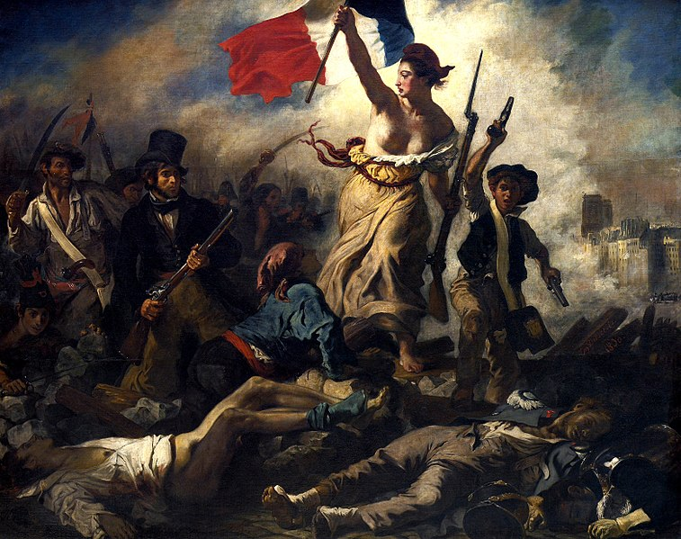

| Época | Duración | Características | Hechos históricos | Grandes artistas | Grandes obras |
|---|---|---|---|---|---|
| Arte prehistorico | - 2.500.000 a.C - 3.500 a.C. |
- Tendencia al esquematismo - Simbolismo - Abstracción - Finalidad ritual o mítica y religiosa que va más allá de lo estético |
- Termina la Edad de Hielo – 10.000 a.C. - Generalización de la presencia del hombre actual - 9.500 a .C. - Primeros asentamientos permanentes y comienzo de la edad de los metales – 8.000 a.C. - Arte rupestre levantino - 5.000 a.C. |
Desconocido | |
| Arte Egipcio y Mesopotámico | - 3.200 a.C - 30 a.C. |
Mesopotámico: - Grabados y relieves en piedra - Narraciones épicas - Arte guerrero Egipcio: - Relieves con figuras de perfil - Arte centrado en la vida después de la muerte - Cosntrucción de pirámides y esfinges |
- Primeros jeroglíficos - 3.200 a.C. - Sistema decimal usado por primera vez a.C. - Papiros, el papel más antiguo del mundo - 3.000 a.C. - Construcción del las pirámides - 2.600 a.C. - Abraham funda el judaísmo - 1.900 a.C. - Hammurabi escribe el primer código de leyes – 1.780 a.C. - Muerte de Cleopatra 30 a.C. |
Desconocido | |
| Arte griego | - 850 a.C. - 31 a.C. |
- Idealismo griego - Proporciones perfectas - Temas de la naturaleza, dioses, religiosos |
- Atenas derrotó al Imperio Persa en Maratón – 490 a.C. - Guerras del Peloponeso – 431 a.C. - Conquistas de Alejandro Magno 336 a.C. |
- Mirón - Fidias - Policleto - Praxíteles |
|
| Arte Romano | - 500 a.C. - 476 d.C. |
- Realismo romano influenciado por Grecia y Etruria - Arte tiene siempre una función - Temas de la naturaleza, históricos, narrativos o alabanza - Arquitectura romana novedosa y funcional |
- Asesinato de Julio César – 44 a.C. - Octavio César Augusto emperador – 27 a.C. - Teodosio divide el imperio en dos – 395 d.C. - Fin del Imperio Romano de Occidente – 476 d.C |
- Facundus Novius, arquitecto - Marco Vitrubio Pollio, arquitecto - Pasíteles, escultor - Valerius, orfebre - Gaius Aulius, escultor |
|
| Periodo paleocristiano y bizantino | - 100 d.C. - 1452 d.C |
Paleocristiano: - Copia los modelos arquitectónios paganos - Improtancia de la cultura funeraria - Arte muy simbólico que transmite a través del dogma cristiano Bizantino: - Síntesis del arte de la Roma clásica - Evocan la magnificiencia, el lujo y la grandeza del Emperador y la Iglesia - Las manifestaciones arquitectonicas benefician el enriquecimiento de monasterios e iglesias - Su arquitectura aporta nuevos modelos constructivos y tipologias |
- Edicto de Milán - 313 d.C - Edicto de Tesalónica declara al cristianismo el imperio - 391 d.C - Cae la ciudad de Bizancio ante los turcos - 1452 d.C |
- Anemio de Tralles - Giotto di Bondone |
|
| Arte musulman de Al-Andalus | - 622-1492 d.C. |
- Destaca la arquitectura sobre las demás artes (mezquitas, palacios) - Decoración abundante - Se basa en repetir unos esquemas de forma seriada - Escasos motivos figurativos y se fundamentan en los abstractos: vegetales, geométricos y calígrafos |
- Llegada de los musulmanes a la peninsula - 711 - Batalla de Guadalete - 711-726 - Abdrahman funda el emirato independiente - 756 - Abd al raham III funda el califato independiente - 929 - Fundación del reino de Granada - 1248 |
Desconocidos |
|
| Arte Románico | - Finales del siglo X - siglo XIII |
- Producción de la pintura Pietista en forma de manuscritos - Arte medieval en forma de vidrieras de colores brillantes - Manuscritos iluminados - Esculturas figurativas talladas en piedra - Trataba de propagar la religión y llevar a Dios más cerca del pueblo |
- Fundación de la orden cluniacense - finales del siglo X - Fundación de la orden ciserciense - 1098 - Conquista de Inglaterra por los normandos - 1066 - Los cruzados toman Jerusalén - 1099 |
Anónimos |
|
| Arte Gótico | - Mediados del siglo XII - principios siglo XVI |
- Principio de la estética de la luz como fundamento de todo arte. - Aplicación en la arquitectura religiosa, con monasterios y catedrales - Aplicación de innovadoras tecnicas de arquitectura que permitieron construir techos altos, arcos arbotantes y paredes de vitrales - Diseño de formas extravagantes - Decoración con materiales brillosos y el uso de colores vivos |
- Cruzadas - Europa se vuelve a poblar de ciudades - Aparece una burguesía urbana |
- Jean Fouquet - Paul Max Bertschy |
|
| Renacimiento | - 1400 - 1550 |
- Renacimiento de la cultura clásica - Interés sideral en el ser humano – Antropocentrismo - El Hombre Renacentista – Artista y Científico |
- Gutenberg inventa la Imprenta – 1447 - Imperio Otomano conquista Constantinopla – 1453 - Colón llega al Nuevo Mundo – 1492 - Martín Lutero comienza la Reforma de la Iglesia – 1517 - Copérnico y Heliocentrismo – 1543 - Concilio de Trento – 1545 |
- Brunelleschi - Sandro Botticelli - Leonardo da Vinci - Miguel Ángel - Rafael Sanzio - Jan van Eyck |
|
| Manirenismo | - 1527 - 1580 |
- Arte que rompe las reglas - Artificio sobre la naturaleza |
- Magallanes circunvala el globo |
- Tintoretto - El Greco - Jacopo da Pontormo |
|
| Barroco | - 1600 - 1750 |
- Esplendor y florecer de Dios - Arte como arma para las guerras religiosas |
- Guerra de los treinta años entre Católicos y Protestantes |
- Peter Paul Rubens - Rembrandt - Caravaggio |
|
| Neoclasicismo | - 1750 – 1850 |
- Arte que recaptura la grandeza y gracia de Grecia y Roma |
- Ilustración – Siglo XVII - Revolución Industrial – 1760-1850 |
- Jacques Louis David - Jean-Auguste-Dominique Ingres - Jean-Baptiste Greuze - Antonio Canova |
|
| Romanticismo | - 1780 – 1850 |
- El triunfo de la imaginación y la individualidad |
- Guerra de Independencia EEUU – 1775-1783 - Revolución Francesa – 1789-1799 - Napoleón emperador de Francia 1803 |
- Caspar David Friedrich - Eugène Delacroix - Théodore Géricault - Benjamin West |
 |
| Realismo | - 1848 – 1900 |
- Arte dedicado a la clase obrera y los campesinos - Pintura en el aire libre |
- Revoluciones democráticas en Europa |
- Camille Corot - Gustave Courbet - Honoré Daumier |
|
| Impesionismo | - 1865 – 1885 |
- Captura de los efectos fugaces y el movimiento - Aprovechamiento de la luz natural |
- Guerra Franco Prusiana - República Francesa – 1870 - Unificación de Alemania – 1871 |
- Claude Monet - Édouard Manet - Pierre-Auguste Renoir |
|
| Post-Impresonismo | - 1885 – 1910 |
- Ligera revolución contra el impresionismo |
- Belle Époque - Japón vence a Rusia – 1905 |
- Vincent van Gogh - Paul Gauguin - Paul Cézanne |
|
| Vanguardias | - 1900 – actualidad |
- Arte rompedor e innovador con numerosos movimientos: |
- Primera Guerra Mundial - Revolución Rusa - Segunda Guerra Mundial - Guerra Fría |
- Pablo Picasso – Cubismo - Henri Matisse – Fauvismo - Salvador Dalí – Surrealismo - Ernst Ludwig Kirchner – Expresionismo |
|